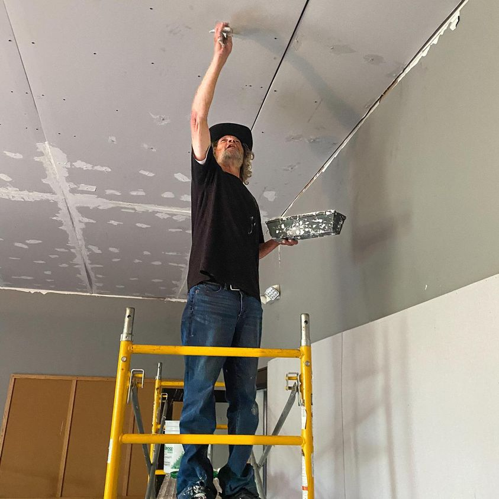

Timeline photos
This is Randy. He’ll be 67 in November. He’s owed social security. But they are giving him the runaround. So he sleeps on random patches of cement because the city of Akron continually forces these people out of the woods and takes all their belongings. He doesn’t even have a tarp right now. (I have one if he needs it. But he’s quite content right now. After spending a couple decades in the old Mansfield penitentiary, small spaces make him claustrophobic.)
He’s one of the people who flies a sign that would rather work. But he won’t work for just anyone. He has to know and trust you.
He’s taping and mudding a ceiling of mine in this picture.
He’s been off of crack and alcohol for a few months. He says his body feels better but his mind feels worse. (I had my 20 year anniversary of not drinking this month. I feel very similar. There is just no escape as good as a high powered drug. You have to have something worth living for to put up with the constant pressure of sober living.)
I told him I’m trying to get a bicycle repair shop up and running. He said he definitely wants to be a part of that.
Randy and I have been friends for years. He’s as good a person as they come.
Place: Akron, Ohio (41.0732, -81.5179)
Address: Akron, OH 44301